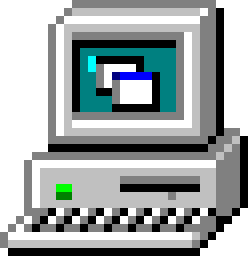

html lang="en"><head>
    <meta charset="UTF-8">
    <meta name="viewport" content="width=device-width, initial-scale=1.0">
    <title>Toad64</title>
    <link rel="stylesheet" type="text/css" href="main.css">
		<link rel="stylesheet" type="text/css" href="index.css">
    <script src="script.js" defer=""></script>
    <link rel="icon" type="image/x-icon" href="images/favicon.png">
  </head>
  <body class="crt">
    <div class="background"></div>
      <div class="content">
        <div style="display: flex; justify-content: center; align-items: center; padding: 10px;">
			    <a href="deathmatch.html"> </a>
                <a href="index.html"> </a>
		    </div>
	
</body></html>